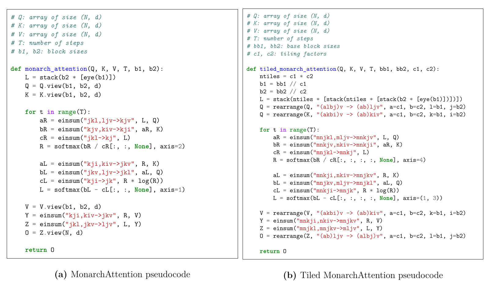
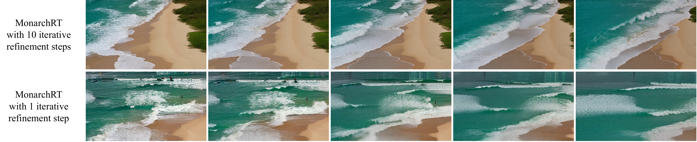

1) Block Alignment with Spatiotemporal Structure
For video DiTs, attention rows/columns correspond to physical visual patches, and a large fraction of the attention structure is
driven by a separable positional component (the $\mathbf{D}$ term in our decomposition). For Monarch to fully capture
this positional structure, the block sizes must be chosen so that the three positional terms can be placed cleanly into
either $\mathbf{L}$ or $\mathbf{R}$ without splitting any spatiotemporal axis.
This becomes concrete if we focus on representing the positional term
$$\mathbf{D}_{(f_0,h_0,w_0),(f_1,h_1,w_1)} = d_f(f_0,f_1)\,d_h(h_0,h_1)\,d_w(w_0,w_1).$$
Under the $(b_1,b_2)$ blocking, Monarch enforces a blockwise rank-1 form
$$\widetilde{\mathbf{M}}_{\ell j k i}=\mathbf{L}_{j\ell k}\,\mathbf{R}_{kji}.$$
Exact representation of $\mathbf{D}$ is possible only if we can assign the three separable terms to the two Monarch factors without mixing axes:
$\mathbf{L}$ must contain (a product of) some subset of $\{d_f,d_h,d_w\}$, and $\mathbf{R}$ must contain the remaining term(s).
If a spatiotemporal axis is split across both block sizes (misalignment), then neither $\mathbf{L}$ nor $\mathbf{R}$ is indexed by both coordinates of that axis.
(Here, "both coordinates" refers to the indices along a given axis for a query and key pair, e.g. $(w_0, w_1)$ along the width axis.)
For example, if the width dimension were split between both block sizes, then one factor would be indexed by $w_0$ while the other is indexed by $w_1$, so the full 2D positional term $d_w(w_0,w_1)$ cannot live entirely inside a single factor.
In that case, capturing $d_w$ exactly would require it to be rank-1 under the induced split, which is generally not true, so $\mathbf{D}$ cannot be represented exactly.
When each of $f$, $h$, and $w$ is fully contained in exactly one block size, the three separable terms can be assigned cleanly to
$\mathbf{L}$ and $\mathbf{R}$. For example, with $(b_1,b_2)=(fh,w)$ one valid construction is
$$\mathbf{L}_{w_0,(f_0,h_0),(f_1,h_1)}=d_f(f_0,f_1)\,d_h(h_0,h_1),\qquad \mathbf{R}_{(f_1,h_1),w_0,w_1}=d_w(w_0,w_1),$$
which makes $\mathbf{M}$ reproduce $\mathbf{D}$ exactly.
To generalize, for $N=f\,h\,w$, the alignment rule yields exactly six (nontrivial) aligned choices for $(b_1,b_2)$:
$$ (fh,w),\ (w,fh),\ (f,hw),\ (hw,f),\ (fw,h),\ (h,fw). $$
Takeaway: Misaligned block sizes prevent exact representation of the positional term $\mathbf{D}$, so an accurate parameterization requires obeying alignment of the Monarch block sizes with the spatiotemporal dimensions $f$, $h$, and $w$.
2) Tiled Monarch Parameterization
From the alignment discussion above, there are only six block size configurations that exactly preserve the separable positional structure in video.
This creates a practical limitation: if you want to reduce sparsity (i.e., spend more compute / parameters to improve approximation), the most obvious approach is to
modify the block sizes $(b_1,b_2)$; however, this is unreliable, as block sizes outside the aligned set are misaligned with spatiotemporal axes, so they may produce worse approximations
even when the representation is less sparse (see Figure 4).
MonarchRT introduces tiled Monarch to reduce sparsity while maintaining alignment: start from one of the six aligned base configurations, then subdivide the
coarse rank-1 blocks induced by Monarch into smaller subtiles with factors $(c_1,c_2)$ (where $c_1\mid b_1$, $c_2\mid b_2$).
So instead of estimating each block with a single set of rank-1 parameters, we estimate each subtile as its own rank-1 piece.
More concretely, tiling replaces each original Monarch block with a grid of $c_1c_2$ subtiles (and does this across all blocks), where each subtile behaves like a
smaller rank-1 block with effective sizes $\bigl(\tfrac{b_1}{c_1},\tfrac{b_2}{c_2}\bigr)$. This increases parameter count while maintaining expressivity through block size alignment.

Figure 5: Comparison of regular and Tiled Monarch. Tiled Monarch subdivides each block into smaller tiles, improving locality while keeping aligned structure.
Tiled Monarch strictly generalizes untiled Monarch.
For the same base block sizes $(b_1,b_2)$, untiled Monarch is a special case of tiled Monarch: set the subtile parameters so that all subtiles within an original block share the same rank-1 factors. Therefore,
$$\mathcal{M}(b_1,b_2)\subseteq \mathcal{M}_{\mathrm{tile}}(b_1,b_2;c_1,c_2).$$
Here $\mathcal{M}(b_1,b_2)$ denotes the set of (untiled) Monarch matrices with block sizes $(b_1,b_2)$, and $\mathcal{M}_{\mathrm{tile}}(b_1,b_2;c_1,c_2)$ denotes the set of tiled Monarch matrices with the same base block sizes and tiling factors $(c_1,c_2)$.
When $c_1>1$ or $c_2>1$, this containment is strict: tiled Monarch can exactly parameterize certain matrices that violate the rank-$1$ constraint of an untiled block. Concretely, let $\boldsymbol{B}^{(j,k)}\in\mathbb{R}^{b_1\times b_2}$ denote the $(j,k)$-th untiled block, and focus on the specific block $\boldsymbol{B}^{(0,0)}$.
Pick two coordinates $(r_1,s_1)$ and $(r_2,s_2)$ with $r_1\neq r_2$ and $s_1\neq s_2$ that lie in different subtiles of this same block, and set all subtiles to zero except those two; within each of the two chosen subtiles,
set all entries to zero except at its designated coordinate $(r_1,s_1)$ or $(r_2,s_2)$, so that
$$\boldsymbol{B}^{(0,0)}_{r_1,s_1}=1,\; \boldsymbol{B}^{(0,0)}_{r_2,s_2}=1,\; \text{and } \boldsymbol{B}^{(0,0)}_{r_1,s_2}=\boldsymbol{B}^{(0,0)}_{r_2,s_1}=0.$$
Then the $2\times 2$ submatrix of $\boldsymbol{B}^{(0,0)}$ restricted to rows $\{r_1,r_2\}$ and columns $\{s_1,s_2\}$ is
$$\begin{pmatrix}1 & 0\\ 0 & 1\end{pmatrix},$$
hence $\mathrm{rank}(\boldsymbol{B}^{(0,0)})\ge 2$, which is impossible for untiled Monarch to exactly represent. But since every subtile is still rank-1, tiled Monarch can represent this construction exactly.
Takeaway: Tiling restores a clear accuracy–efficiency tradeoff: increasing $(c_1,c_2)$ refines locality and improves approximation quality by investing more compute/parameters. Refining the granularity of each rank-1 partition also makes it easier to capture non-positional patterns, like sparse semantic correlations.

Figure 6: MonarchAttention vs. tiled MonarchAttention pseudocode: tiling modifies the refinement updates to operate on smaller sub-blocks.
Note:
Another way to reduce sparsity while maintaining alignment is to estimate each original Monarch block as
rank-$k$ for $k>1$. However, we find this does not yield a clean MonarchAttention-style
iterative refinement algorithm for estimating the factors, so we do not adopt this approach.
3) Finetuning + Triton Kernels (Reducing Iterative Overhead)
MonarchAttention uses iterative refinement to estimate factors $\mathbf{L}$ and $\mathbf{R}$.
Using more iterations improves the accuracy of the approximation but linearly increases the runtime.
MonarchRT reduces this overhead by employing finetuning, so that 1 iteration + finetuning matches the quality of much longer refinement without finetuning, significantly lowering the algorithmic cost.

Figure 7: Iterative refinement improves quality but costs scale with iterations; finetuning recovers the quality of many iterations using 1.
On the systems side, we write custom Triton kernels to efficiently implement the tiled MonarchAttention forward and backward passes,
so the 1-iteration refinement cost remains small.

Figure 8: Two-stage kernel visualization for tiled MonarchAttention forward pass.
 Motivation and Observations: Structure of 3D Attention
Motivation and Observations: Structure of 3D Attention